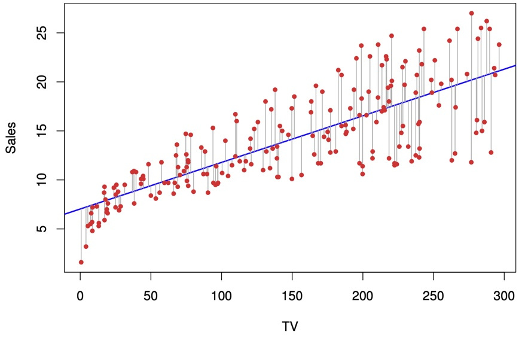
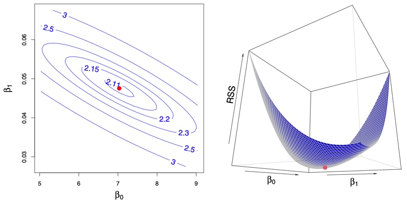
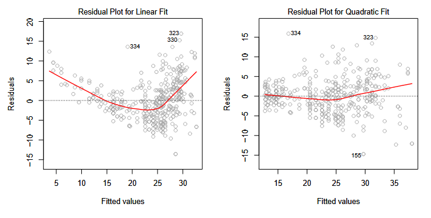
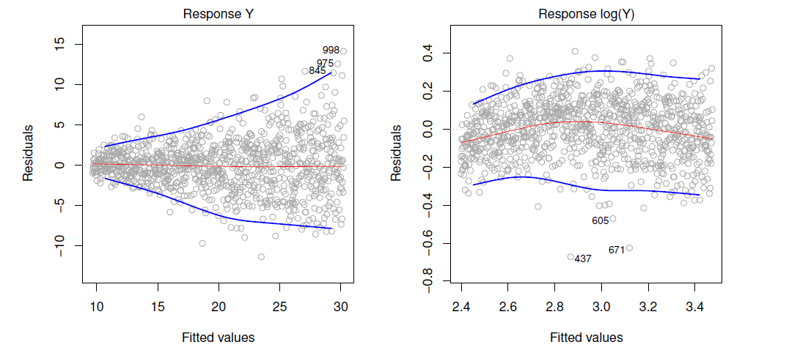
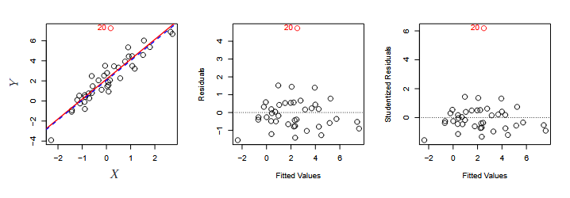
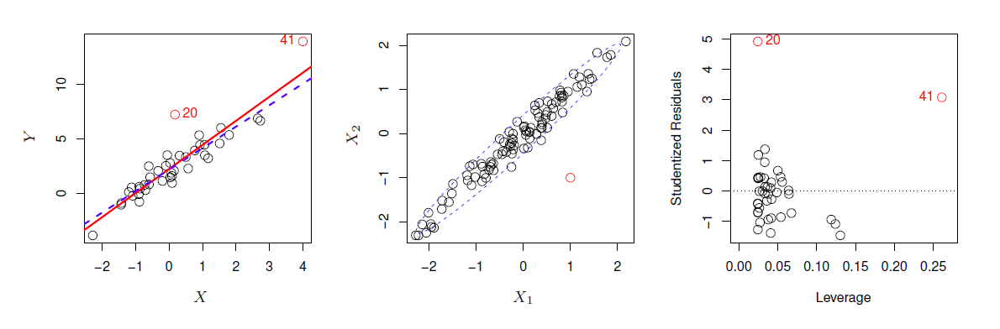
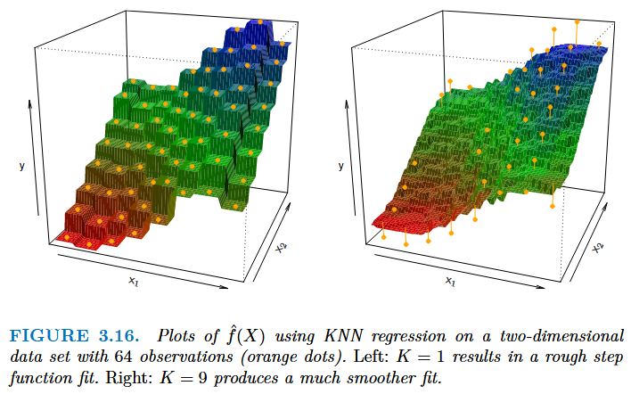

Recall the Advertising data from Chapter 2. Here are a few important questions that we might seek to address:
Y = sales in thousands of $
Is there a relationship between advertising budget and sales?
How strong is the relationship between advertising budget and sales? Does knowledge of the advertising budget provide a lot of information about product sales?
Which media are associated with sales?
How large is the association between each medium and sales? For every dollar spent on advertising in a particular medium, by what amount will sales increase?
How accurately can we predict future sales?
Is the relationship linear? If there is approximately a straight-line relationship between advertising expenditure in the various media and sales, then linear regression is an appropriate tool. If not, then it may still be possible to transform the predictor or the response so that linear regression can be used.
Is there synergy among the advertising media? Or, in stats terms, is there an interaction effect?
Linear regression can give an answer to all Qs!
Simple Linear Regression
Supervised learning approach
Linear regression = Linear model
Regression term is chosen due to historical reasons
Comes from “regression toward the mean”
Definition
Simple linear regression: Very straightforward approach to predicting response \(Y\) on predictor \(X\)
Assumes there’s approximately a linear relationship between \(Y\) and \(X\)
\[Y \approx \beta_{0} + \beta_{1}X\]
Read “\(\approx\)” as “is approximately modeled by.”
Also read: “regressing Y on X”
\(\beta_{0}\) = intercept
\(\beta_{1}\) = slope
Learned model: \(\hat{y}\) = our prediction of \(Y\) from \(x\) and using \(\hat{\beta}_{0}\) and \(\hat{\beta}_{0}\)\[\hat{y} = \hat{\beta}_{0} + \hat{\beta}_{1}x\]
\(x\) = sample of \(X\)
\(\hat{\beta}_{0}\) and \(\hat{\beta}_{0}\) are coefficients or parameters
They are estimated using the data (training data)
\(\hat{\beta}_{0}\) = our approximation of intercept
\(\hat{\beta}_{1}\) = our approximation of slope
hat symbol ^ denotes “estimated value” for unknown parameters (i.e. something estimated through training)
Visualization

For the Advertising data, the least squares fit for the regression of sales onto TV is shown. The fit is found by minimizing the residual sum of squares (RSS). Each grey line segment represents a residual. In this case a linear fit captures the essence of the relationship, although it overestimates the trend in the left of the plot.
Estimating the Coefficients
Goal: Find \(\hat{\beta}_{0}\) and \(\hat{\beta}_{1}\) that makes \(\hat{y}\) as close as possible to \(y\)
How?: There are many ways to do this
Common approach is to minimize least squares criterion
In our case: least squares = residual sum of squares (RSS)
i.e. the metric we need to minimize
In practice, computers do that!
e.g. model.fit()
Residual sum of squares (RSS)
Key ingrediant in the later quantities (\(R^2\), \(RSE\), \(F\))
Let \(e_i = y_i - \hat{y_i}\) (called residual), where \(i\) is the index of of some value \(x_i\) from \(X\).
\(\bar{x}\), \(\bar{y}\) = sample means of \(x\) and \(y\)
Visualization of Fit

Contour and three-dimensional plots of the RSS on the Advertising data, using sales as the response and TV as the predictor. The red dots correspond to the least squares estimates \(\hat{\beta}_{0}\) and \(\hat{\beta}_{1}\), given by (3.4).
Assessing Accuracy of Coefficient Estimates
Back to our initial assumption (in another notation w/o “\(\approx\)”): \[Y = \beta_{0} + \beta_{1}X + \epsilon\]
This is called the population regression line
The best approximation under linearity assumption
Why do we want to assess accuracy of coefficient estimates?
\(\hat\beta_0\) defines the slope = slope implies some relationship which need to be assessed statistically
\(\epsilon\): irreducible error term
Assumption 1: \(\epsilon \sim N(0,\sigma^2)\)
Assumption 2: \(\epsilon\) is independent of \(X\)
It’s here for many reasons (mostly due to our limited knoledge about the REAL relationship between \(Y\) and \(X\))
where \(n\) is the sample size - Standard error assoicated with \(\hat{\beta}_{0}\) and \(\hat{\beta}_{1}\): \[\mathrm{SE}(\hat\beta_0)^2 = \sigma^2 \left[\frac{1}{n} + \frac{\bar{x}^2}{\sum_{i=1}^n (x_i - \bar{x})^2}\right]\]
Interpretation:absolute measure of the lack of fit of the model
small value = model fits the data well
measured in the unit of \(Y\) (e.g. RSE = 3.2 units sold)
\(R^2\) statistic (a.k.a coefficient of determination): \[R^2 = 1 - \frac{RSS}{TSS}\] where TSS is the total sum of squares: \[TSS = \Sigma (y_i - \bar{y})^2\]
Interpretation:proportion of the variance in \(Y\) explained by using some predictor \(X\)
\(\beta_{j}\) is the average effect on \(Y\) from \(X_{j}\) holding all other predictors fixed.
But this is not the case in reality! (e.g. using weight and height as predictors in some model)
For \(p=2\) predictors, the model represents a plane in the 3D space instead of a line \[\hat{y} = \hat{\beta_{0}} + \hat{\beta_{1}}x_1 + \hat{\beta_{2}}x_2 + ... + \hat{\beta_{p}}x_p\]
As in the simple case, we aim to choose the set of coefficients \(\hat{\beta_{0}}, \hat{\beta_{1}}, ..., \hat{\beta_{p}}\) that minimizes the \(RSS\) when making predictions using \(\hat{y}\)
In this section, we assume predictors are independent of each others
use it to find p-value (all of that can be don using computers)
Deciding on important variables to include in the model:Do all the predictors help to explain \(Y\) , or is only a subset of the predictors useful?
a.k.a. Model Selection Problem
Option 1: test all possibilities and choose the best subset (inefficient with many variables w/ \(2^p\) possible models)
Option 2: use a variable selection algorithm (Forward - Backward - Mixed)
Discussed in detail in Chapter 6
Model evaluation:How well does the model fit the data?
\(R^2\) still gives proportion of the variance explained
Adding predictors w/ no association to \(Y\) can reducde \(R^2\) but results in overfitting
Can also look at RSE which is generalized for multiple regression as: \[RSE = \sqrt{\frac{1}{n-p-1}RSS}\]
Making and assising predictions:Given a set of predictor values, what response value should we predict, and how accurate is our prediction?
Three sets of uncertainty in predictions:
Uncertainty in \(\hat{\beta_i}\) the estimates of \(\beta_i\) (use confidence interval)
Model bias (i.e. inductive bias): casued by our assumptions
Irreducible error \(\epsilon\) (use prediction interval): even if we know the true \(\beta_i\), there is still \(\epsilon\)!
PI is wider than CI because it incorporates all all kinds of errors.
Qualitative Predictors
a.k.a. categorical predictors or factor variables
Dummy variables (a.k.a. one-hot encoding): if there are \(k\) levels, introduce \(k-1\) dummy variables which are equal to one when the underlying qualitative predictor takes that value.
For example if there are 3 levels, introduce 2 new dummy variables (\(x_1\) and \(x_2\)) and fit the model:
Coefficients are interpreted the average effect relative to the baseline.
Extensions to the Linear Model
Interaction/Synergy Effects
Remove the previous assumptions about independence among predictors (additive assumption)
Add a product term \(X_1 \times X_2\) with its own coefficient \(\beta_3\) to model how the relationship between \(Y\) and one variable \(X_1\) changes depending on the value of the other variable \(X_2\): \[Y = \beta_{0} + \beta_{1}X_1 + \beta_{2}X_2 + \beta_{3}(X_1 \cdot X_2) + \epsilon_i\]
There are many possibilities (e.g. interaction between quant. and qualit. variables)
Common problems with linear models and tips to address them
Non-linear relationships 
Residual plots are useful tool to see if any remaining trends exist.
If a non-linear associations are observed, consider transformaing predictors before fitting (e.g. \(log X\))
Correlation of Error Terms
Linear regression assumes that the error terms \(\epsilon_i\) are uncorrelated. Residuals may indicate that this is not correct (obvious tracking in the data). One could also look at the autocorrelation of the residuals (e.g. time-series).
Non-constant variance of error terms
Again this can be revealed by examining the residuals. Consider transformation of the predictors to remove non-constant variance. The figure below shows residuals demonstrating non-constant variance, and shows this being mitigated to a great extent by log transforming the data.

Figure 3.11
Outliers
Observations for which \(y_i\) is unusual given \(x_i\) (see point ‘20’ in figure 3.12)
Often outliers are mistakes in data collection and can be removed, but could also be an indicator of a deficient model.
Detect outliers by plotting studentized residuals (residual \(e_i\) divided by the estimated error) and look for residuals larger then 3 standard deviations in absolute value.
An outlier may not effect the fit much but can have dramatic effect on the RSE.
We need to identify these before fitting the model

Figure 3.12
High Leverage Points
These are points with unusual values of \(x_i\) (see point ‘41’ in figure 3.13)
These points can have large impact on the fit, as in the example, including point 41 pulls slope up significantly.
Use leverage statistic to identify high leverage points before fitting the model, which can be hard to identify in multiple regression.

Figure 3.13
Collinearity
Two predictor variables are closely related to one another.
The problem is that it’s difficult to separate out the individual effect of each one on the reponse.
Often can be addressed with by:
Dropping one of the highly correlated predictors or
Combining correlated predictors into one variable.
Multicollinearity (collinearity involving 3 or more predictors) is not so easy to identify.
Use Variance inflation factor, which is the ratio of the variance of \(\hat{\beta_j}\) when fitting the full model to fitting the parameter on its own. Can be computed using the formula: \[VIF(\hat{\beta_j}) = \frac{1}{1-R^2_{X_j|X_{-j}}}\]
where \(R^2_{X_j|X_{-j}}\) is the \(R^2\) from a regression of \(X_j\) onto all the other predictors.
large \(VIF\) indicates the presence of collinearty
Answers to the Marketing Plan questions
Is there a relationship between advertising budget and sales?
Tool: Multiple regression, look at F-statistic.
How strong is the relationship between advertising budget and sales?
Tool: \(R^2\) and RSE
Which media are associated with sales?
Tool: model selection approaches e.g. p-values for each predictor’s t-statistic. Explored further in chapter 6.
How large is the association between each medium and sales?
Tool: Confidence intervals on \(\hat{\beta_j}\). Narrow CI is a strong evidence for association
How accurately can we predict future sales?
Tool: Prediction intervals for individual response, confidence intervals for average response.
Is the relationship linear?
Tool: Residual Plots
Is there synergy among the advertising media?
Tool: Interaction terms and the significance of interaction term’s coefficient.
Comparison of Linear Regression with K-Nearest Neighbors
This section examines the K-nearest neighbor (KNN) method (a non-parameteric method).
Non-parametric methods doesn’t make assumptions about the form of \(f(X)\) (e.g. linearity)
This is essentially a \(K\)-point moving average.

\(K\) determines the model smoothness
Small value: low bias & high variance
High value: high bias & low variance
This serves to illustrate the Bias-Variance trade-off nicely.
However, parameteric methods outperform non-parameteric methods if the assumptions made were close to the true \(f(X)\).
# Notes {-}## Questions to AnswerRecall the `Advertising` data from **Chapter 2**. Here are a few important questions that we might seek to address:> Y = sales in thousands of $1. **Is there a relationship between advertising budget and sales?**2. **How strong is the relationship between advertising budget and sales?** Does knowledge of the advertising budget provide a lot of information about product sales?3. **Which media are associated with sales?**4. **How large is the association between each medium and sales?** For every dollar spent on advertising in a particular medium, by what amount will sales increase? 5. **How accurately can we predict future sales?**6. **Is the relationship linear?** If there is approximately a straight-line relationship between advertising expenditure in the various media and sales, then linear regression is an appropriate tool. If not, then it may still be possible to transform the predictor or the response so that linear regression can be used.7. **Is there synergy among the advertising media?** Or, in stats terms, is there an interaction effect?**Linear regression can give an answer to all Qs!**## Simple Linear Regression- Supervised learning approach- Linear regression = Linear model- **Regression** term is chosen due to historical reasons- Comes from "regression toward the mean"### Definition- **Simple linear regression:** Very straightforward approach to predicting response $Y$ on predictor $X$- Assumes there's approximately a linear relationship between $Y$ and $X$$$Y \approx \beta_{0} + \beta_{1}X$$- Read "$\approx$" as *"is approximately modeled by."* - Also read: "regressing Y on X"- $\beta_{0}$ = intercept- $\beta_{1}$ = slope- **Learned model**: $\hat{y}$ = our prediction of $Y$ from $x$ and using $\hat{\beta}_{0}$ and $\hat{\beta}_{0}$$$\hat{y} = \hat{\beta}_{0} + \hat{\beta}_{1}x$$- $x$ = sample of $X$- $\hat{\beta}_{0}$ and $\hat{\beta}_{0}$ are **coefficients** or **parameters** - They are estimated using the data (training data) - $\hat{\beta}_{0}$ = our approximation of intercept - $\hat{\beta}_{1}$ = our approximation of slope - **hat symbol** ^ denotes "estimated value" for unknown parameters (i.e. something estimated through training)### Visualization```{r}#| label: fig3-1#| echo: false#| fig-cap: For the `Advertising` data, the least squares fit for the regression of `sales` onto `TV` is shown. The fit is found by minimizing the residual sum of squares (RSS). Each grey line segment represents a residual. In this case a linear fit captures the essence of the relationship, although it overestimates the trend in the left of the plot.#| out-width: 100%knitr::include_graphics("images/fig3_1.jpg")```### Estimating the Coefficients- **Goal:** Find $\hat{\beta}_{0}$ and $\hat{\beta}_{1}$ that makes $\hat{y}$ as close as possible to $y$- **How?**: There are many ways to do this- Common approach is to minimize *least squares* criterion - In our case: *least squares* = **residual sum of squares (RSS)** - i.e. the metric we need to minimize - In practice, computers do that! - e.g. `model.fit()`#### Residual sum of squares (RSS)> Key ingrediant in the later quantities ($R^2$, $RSE$, $F$)Let $e_i = y_i - \hat{y_i}$ (called **residual**), where $i$ is the index of of some value $x_i$ from $X$.Then:$$\mathrm{RSS} = e^{2}_{1} + e^{2}_{2} + \ldots + e^{2}_{n}$$$$\mathrm{RSS} = (y_{1} - \hat{\beta}_{0} - \hat{\beta}_{1}x_{1})^{2} + (y_{2} - \hat{\beta}_{0} - \hat{\beta}_{1}x_{2})^{2} + \ldots + (y_{n} - \hat{\beta}_{0} - \hat{\beta}_{1}x_{n})^{2}$$Least squares approachs chooses $\hat{\beta}_{0}$ and $\hat{\beta}_{1}$ to minimize $RSS$:$$\hat{\beta}_{1} = \frac{\sum_{i=1}^n (x_i - \bar{x})(y_i - \bar{y})}{\sum_{i=1}^n (x_i - \bar{x})^2}$$$$\hat{\beta}_{0} = \bar{y} - \hat{\beta}_{1}\bar{x}$$- $\bar{x}$, $\bar{y}$ = sample means of $x$ and $y$### Visualization of Fit```{r}#| label: fig3-2#| echo: false#| fig-cap: Contour and three-dimensional plots of the RSS on the `Advertising` data, using `sales` as the response and `TV` as the predictor. The red dots correspond to the least squares estimates $\hat{\beta}_{0}$ and $\hat{\beta}_{1}$, given by (3.4).#| out-width: 100%knitr::include_graphics("images/fig3_2.jpg")```### Assessing Accuracy of Coefficient EstimatesBack to our initial assumption (in another notation w/o "$\approx$"):$$Y = \beta_{0} + \beta_{1}X + \epsilon$$- This is called the *population regression line* - The best approximation under linearity assumption- Why do we want to assess accuracy of coefficient estimates? - $\hat\beta_0$ defines the **slope** = slope implies some relationship which need to be assessed statistically- $\epsilon$: irreducible error term - **Assumption 1**: $\epsilon \sim N(0,\sigma^2)$ - **Assumption 2**: $\epsilon$ is independent of $X$ - It's here for many reasons (mostly due to our limited knoledge about the REAL relationship between $Y$ and $X$) - "[All models are wrong, but some are useful](https://en.wikipedia.org/wiki/All_models_are_wrong)" - George Box- Problem: - $Y$ is a random variable with population mean $\mu$ - $\hat{y}$ is a random variable with sample mean $\hat{\mu}$ (estimated using data) - **How accurate is the \hat{mu} as an estimate of $\mu$?** - This is answered by finding the **standard error** ($SE$) for coefficients#### Standard error of regression coefficients- Residual standard error (RSE): will be used later to find $SE$$$\mathrm{RSE} = \sqrt{\frac{\mathrm{RSS}}{n - 2}}$$where $n$ is the sample size- Standard error assoicated with $\hat{\beta}_{0}$ and $\hat{\beta}_{1}$:$$\mathrm{SE}(\hat\beta_0)^2 = \sigma^2 \left[\frac{1}{n} + \frac{\bar{x}^2}{\sum_{i=1}^n (x_i - \bar{x})^2}\right]$$$$\mathrm{SE}(\hat\beta_1)^2 = \frac{\sigma^2}{\sum_{i=1}^n (x_i - \bar{x})^2}$$- **95% confidence interval:** - a range of values such that with 95% probability, the range will contain the true unknown value of the parameter - "95" is just a common number- The 95% CI limits are formed by:$$\hat\beta_1 \pm 2\ \cdot \ \mathrm{SE}(\hat\beta_1)$$$$\hat\beta_0 \pm 2\ \cdot \ \mathrm{SE}(\hat\beta_0)$$- Figure below can be read: "*there's approximately 95% chance that the shaded area will contain the true value of $\beta$*"#### Using SE in hypothesis testing- For any estimated coefficient $\hat{\beta}$: 1. Formulate a null hypothesis $H_0$ vs. alternative hypothesis $H_a$ about $\hat{\beta}$ 2. Estimate $SE$ 3. Compute *t-statistic*: $$t = \frac{\hat{\beta}}{SE(\hat{\beta})}$$ 4. Use t-statistic to find the p-value = $Pr(|t|)$ 5. p-value is used to decide whether we reject null hypothesis or not- $H_0$ is rejected if p-value < $\alpha$ - $\alpha$ significance level: the common choice is 0.05, but this cutoff vary based on context - if the p-value of some coefficient < $\alpha$, then we say it has **significant** effect on $Y$ - otherwise, we say it has **insignificant** effect on $Y$- e.g. $H_0$ : There is no relationship between ad. on TV and the increase in sales - $\rightarrow$ slope is approximately 0 - $\rightarrow$ $H_0$: $\beta_1$ = 0- Easy to do using Python or R- More details in chapter 13### Assessing the Accuracy of the Model> i.e. Model Evaluation- Accuracy of the model = Quality of a linear regression fit- There are four quantities for that: 1. **Residual standard error** ($RSE$) 2. $R^2$ **statistic** 3. Pearson correlation coefficient ($r=Cor(X,Y)$) 4. $F$-**statistic** (discussed in next section)- **RSE**: $$\mathrm{RSE} = \sqrt{\frac{\mathrm{RSS}}{n - 2}}$$ - **Interpretation:** *absolute measure of the lack of fit of the model* - **small value** = model fits the data well - measured in the unit of $Y$ (e.g. RSE = 3.2 units sold)- *$R^2$* statistic (a.k.a coefficient of determination): $$R^2 = 1 - \frac{RSS}{TSS}$$where TSS is the **total sum of squares**:$$TSS = \Sigma (y_i - \bar{y})^2$$ - **Interpretation:** *proportion of the variance in $Y$ explained by using some predictor $X$* - a *good value* depends on the application. - ranges from 0 to 1 ([can be negative in extreme cases?](https://www.graphpad.com/support/faq/how-can-rsup2sup-be-negative/))- Pearson correlation coefficient ($r=Cor(X,Y)$)$$r = Cor(X,Y) = \frac{\sum{(x_i - \bar{x})(y_i - \bar{y})}}{\sqrt{\sum{(x_i - \bar{x})^2} \sum{(y_i - \bar{y})^2}}}$$ - $R^2=r^2$ in simple linear regression## Multiple Linear Regression### Definition**Multiple linear regression** extends simple linear regression for *p* predictors:$$Y = \beta_{0} + \beta_{1}X_1 + \beta_{2}X_2 + ... +\beta_{p}X_p + \epsilon_i$$- $\beta_{j}$ is the *average* effect on $Y$ from $X_{j}$ holding all other predictors fixed. - But this is not the case in reality! (e.g. using weight and height as predictors in some model)- For $p=2$ predictors, the model represents a plane in the 3D space instead of a line$$\hat{y} = \hat{\beta_{0}} + \hat{\beta_{1}}x_1 + \hat{\beta_{2}}x_2 + ... + \hat{\beta_{p}}x_p$$- As in the simple case, we aim to choose the set of coefficients $\hat{\beta_{0}}, \hat{\beta_{1}}, ..., \hat{\beta_{p}}$ that minimizes the $RSS$ when making predictions using $\hat{y}$- In this section, we assume predictors are **independent** of each others- Important notes ([from lecture 3](https://www.youtube.com/watch?v=o9hoLdylWKo&list=PLoROMvodv4rPP6braWoRt5UCXYZ71GZIQ&index=15)) - Ideal scenario (i.e. balanced design): Predictors are uncorrelated - Correlations amongst predictors cause problems - When a change on some predictor $X_j$ changes everything else, coefficient intepretations become hazardous - Makes thing complicated when discussing **causality**### Important Questions in MLR> More variables/predictors $\rightarrow$ More things to assess!1. **Relationship between the resposne and predictors:** *Is at least one of the predictors $X_1$, $X_2$, ... , $X_p$ useful in predicting the response?* a. formulate a null hypothesis $H_0: \beta_1 = \beta_2 = ... = \beta_p = 0$ b. compute $F$-statistic $$F = \frac{(TSS-RSS)/p}{RSS/(n-p-1)}$$ c. use it to find p-value (all of that can be don using computers)2. **Deciding on important variables to include in the model:** *Do all the predictors help to explain $Y$ , or is only a subset of the predictors useful?* - a.k.a. Model Selection Problem - **Option 1**: test all possibilities and choose the best subset (inefficient with many variables w/ $2^p$ possible models) - **Option 2**: use a **variable selection** algorithm (Forward - Backward - Mixed) - Discussed in detail in Chapter 63. **Model evaluation:** *How well does the model fit the data?* - **$R^2$** still gives *proportion of the variance explained* - Adding predictors w/ no association to $Y$ can reducde $R^2$ but results in overfitting - Can also look at **RSE** which is generalized for multiple regression as: $$RSE = \sqrt{\frac{1}{n-p-1}RSS}$$4. **Making and assising predictions:** *Given a set of predictor values, what response value should we predict,and how accurate is our prediction?* Three sets of uncertainty in predictions: - Uncertainty in $\hat{\beta_i}$ the estimates of $\beta_i$ (use **confidence interval**) - Model bias (i.e. inductive bias): casued by our assumptions - Irreducible error $\epsilon$ (use **prediction interval**): even if we know the true $\beta_i$, there is still $\epsilon$! - PI is wider than CI because it incorporates all all kinds of errors.## Qualitative Predictors> a.k.a. *categorical predictors* or *factor variables*- **Dummy variables** (a.k.a. one-hot encoding): if there are $k$ levels, introduce $k-1$ dummy variables which are equal to one when the underlying qualitative predictor takes that value. - For example if there are 3 levels, introduce 2 new dummy variables ($x_1$ and $x_2$) and fit the model:$$y_i = \beta_0 + \beta_1 x_{i1} + \beta_2 x_{i2} + \epsilon_i$$| Qualitative Predicitor | $x_{i1}$ | $x_{i2}$ || ---------------------- |:--------:|:--------:|| level 0 (baseline) | 0 | 0 || level 1 | 1 | 0 || level 2 | 0 | 1 |- Coefficients are interpreted the average effect relative to the baseline.## Extensions to the Linear Model- **Interaction/Synergy Effects** - Remove the previous assumptions about independence among predictors (additive assumption) - Add a product term $X_1 \times X_2$ with its own coefficient $\beta_3$ to model how the relationship between $Y$ and one variable $X_1$ changes depending on the value of the other variable $X_2$: $$Y = \beta_{0} + \beta_{1}X_1 + \beta_{2}X_2 + \beta_{3}(X_1 \cdot X_2) + \epsilon_i$$ - There are many possibilities (e.g. interaction between quant. and qualit. variables)- Non-linear relationships (e.g. polynomial fits)$$Y = \beta_{0} + \beta_{1}X + \beta_{2}X^2 + ... \beta_{n}X^n + \epsilon_i$$## Potential Problems> Common problems with linear models and tips to address them1. *Non-linear relationships*  - Residual plots are useful tool to see if any remaining trends exist. - If a non-linear associations are observed, consider transformaing predictors before fitting (e.g. $log X$)2. *Correlation of Error Terms* Linear regression assumes that the error terms $\epsilon_i$ are uncorrelated. Residuals may indicate that this is not correct (obvious *tracking* in the data). One could also look at the autocorrelation of the residuals (e.g. time-series). 3. *Non-constant variance of error terms* Again this can be revealed by examining the residuals. Consider transformation of the predictors to remove non-constant variance. The figure below shows residuals demonstrating non-constant variance, and shows this being mitigated to a great extent by log transforming the data.```{r}#| label: fig3-11#| echo: false#| fig-cap: Figure 3.11#| out-width: 100%knitr::include_graphics("images/fig3_11.png")```4. *Outliers* - Observations for which $y_i$ is unusual given $x_i$ (see point '20' in figure 3.12) - Often outliers are mistakes in data collection and can be removed, but could also be an indicator of a deficient model. - Detect outliers by plotting studentized residuals (residual $e_i$ divided by the estimated error) and look for residuals larger then 3 standard deviations in absolute value. - An outlier may not effect the fit much but can have dramatic effect on the **RSE**. - We need to identify these before fitting the model5. *High Leverage Points* - These are points with unusual values of $x_i$ (see point '41' in figure 3.13) - These points can have large impact on the fit, as in the example, including point 41 pulls slope up significantly. - Use *leverage statistic* to identify high leverage points before fitting the model, which can be hard to identify in multiple regression.```{r}#| label: fig3-13#| echo: false#| fig-cap: Figure 3.13#| out-width: 100%knitr::include_graphics("images/fig3_13.png")```6. *Collinearity* - Two predictor variables are closely related to one another. - The problem is that it's difficult to separate out the individual effect of each one on the reponse. - Often can be addressed with by: 1. Dropping one of the highly correlated predictors or 2. Combining correlated predictors into one variable. - *Multicollinearity* (collinearity involving 3 or more predictors) is not so easy to identify. - Use *Variance inflation factor*, which is the ratio of the variance of $\hat{\beta_j}$ when fitting the full model to fitting the parameter on its own. Can be computed using the formula: $$VIF(\hat{\beta_j}) = \frac{1}{1-R^2_{X_j|X_{-j}}}$$ - where $R^2_{X_j|X_{-j}}$ is the $R^2$ from a regression of $X_j$ onto all the other predictors. - large $VIF$ indicates the presence of collinearty## Answers to the Marketing Plan questions1. **Is there a relationship between advertising budget and sales?** Tool: Multiple regression, look at F-statistic.2. **How strong is the relationship between advertising budget and sales?** Tool: **$R^2$** and **RSE**3. **Which media are associated with sales?** Tool: model selection approaches e.g. p-values for each predictor's *t-statistic*. Explored further in chapter 6.4. **How large is the association between each medium and sales?** Tool: Confidence intervals on $\hat{\beta_j}$. Narrow CI is a strong evidence for association5. **How accurately can we predict future sales?** Tool: Prediction intervals for individual response, confidence intervals for average response.6. **Is the relationship linear?** Tool: Residual Plots7. **Is there synergy among the advertising media?** Tool: Interaction terms and the significance of interaction term's coefficient.## Comparison of Linear Regression with K-Nearest Neighbors- This section examines the K-nearest neighbor (KNN) method (a non-parameteric method).- Non-parametric methods doesn't make assumptions about the form of $f(X)$ (e.g. linearity)- This is essentially a $K$-point moving average.- $K$ determines the model smoothness - Small value: low bias & high variance - High value: high bias & low variance- This serves to illustrate the Bias-Variance trade-off nicely.- However, parameteric methods outperform non-parameteric methods if the assumptions made were close to the true $f(X)$.## Helpful links- [https://mlu-explain.github.io/linear-regression/](https://mlu-explain.github.io/linear-regression/)- [https://observablehq.com/@yizhe-ang/interactive-visualization-of-linear-regression](https://observablehq.com/@yizhe-ang/interactive-visualization-of-linear-regression)